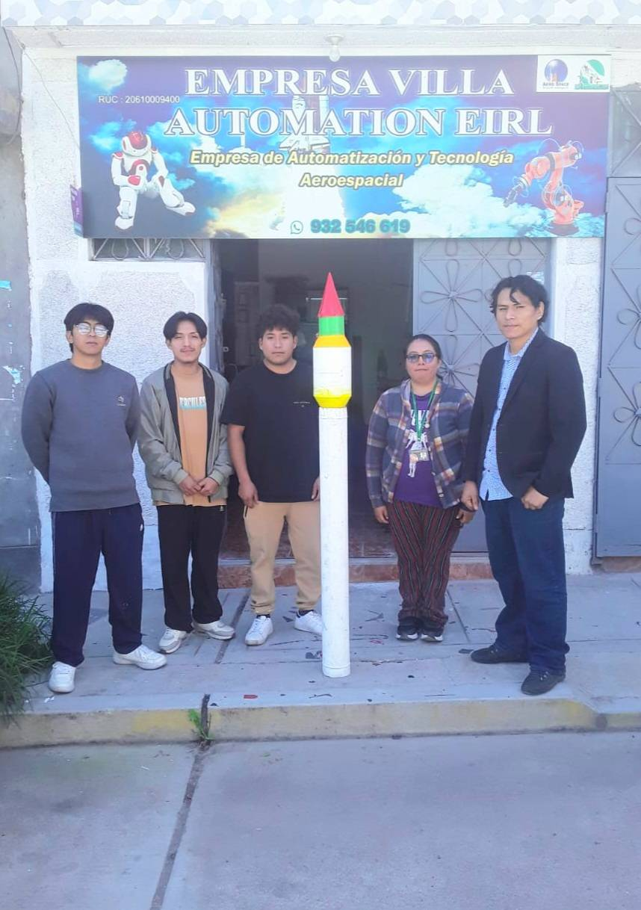

Puesto laboral y Convocatorias
Programas de formación profesional en automatización, robótica, IA y control.
En Villa Automation EIRL, creemos que el crecimiento tecnológico comienza con el talento humano. Buscamos profesionales, técnicos y estudiantes apasionados por la innovación, la robótica, la electrónica, la automatización y las tecnologías aeroespaciales. Nuestro objetivo es formar un equipo multidisciplinario capaz de desarrollar soluciones reales para la industria, agricultura, medio ambiente y defensa nacional.
Áreas donde buscamos talento
- Automatización y Control Industrial (PLC, sensores, actuadores, SCADA).
- Robótica Colaborativa y Móvil (Arduino, ROS, servomecanismos, visión artificial).
- Aeroespacial y Satelital (desarrollo de nanosatélites, cohetes experimentales, control orbital).
- Software y Electrónica (programación embebida, Python, Node-RED, IA aplicada)
- Mecatrónica y Diseño CAD 3D (diseño de estructuras, impresión 3D, prototipado rápido).

Teoria fundamental de los robots colaborativos, diseño y construcción